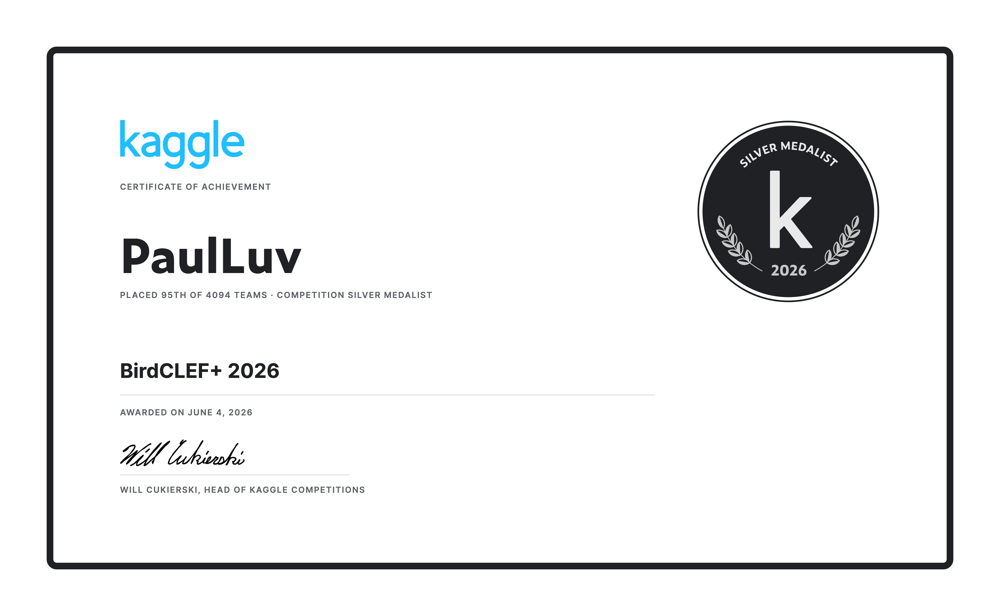

AI-Powered Autonomous Pacing Bot
Built an autonomous pacing robot designed to give runners a visual pace
reference while also analyzing running form in real time. The system uses
a three-wheel chassis, dual cameras, YOLO-style trackline segmentation,
pose estimation, PID control, an RK3588 embedded platform, and Arduino
Nano microcontrollers for motor and steering control.
92.67%
trackline segmentation accuracy
1.96%
average speed error
88.9%
running form agreement
40 FPS
trackline pipeline runtime
YOLO Segmentation
MediaPipe Pose
RK3588 NPU
Arduino
PID Control
PACE
Building a running-focused mobile coaching app with an Expo React Native
frontend and an Express backend. PACE turns daily check-ins into readiness
scores, training notes, recent warning flags, recovery guidance, and a
logged plan for the day.
The current app includes a coaching-agent system with a Head Coach,
Training Coach, Recovery Coach, and Injury Manager. The backend stores
runner profiles, morning check-ins, coach chats, injury records, training
plans, subscription status, and daily usage events in SQLite for local
development.
Current public-launch work includes production environment templates,
account controls, email verification, password reset, data export, delete
account, rate limits, medical-safety boundaries, deployment files, EAS build
setup, RevenueCat billing scaffolding, and draft privacy, terms, and safety
documents.
React Native
Express
SQLite
OpenAI API
RevenueCat Prep
Public Launch Prep
Kaggle BirdCLEF
Earned a Silver Medal in BirdCLEF+ 2026, placing 95th out of 4094 teams.
The project focused on bird-sound classification using a packaged submission
workflow with shared Perch features, SED outputs, retrained branch artifacts,
sequence modeling, and rank blending.
The release package includes upload-ready Kaggle dataset assets, a submission
notebook, model artifacts, and documentation for reproducing the final
submission pipeline.

Silver Medal
Audio ML
Kaggle
Perch Features
Ensembling
Running Fatigue Detection
Project under development through Pioneer. I am exploring whether wearable
sensors, including accelerometers and gyroscopes, can detect fatigue-related
gait changes by comparing a runner's motion against their own low-fatigue
baseline.
Planned features include cadence, trunk movement, stride length, body symmetry,
sensor placement, data filtering, and validation using public gait datasets
plus self-collected running data.
Under Development
Wearable Sensors
IMU Data
Gait Analysis
Running Fatigue